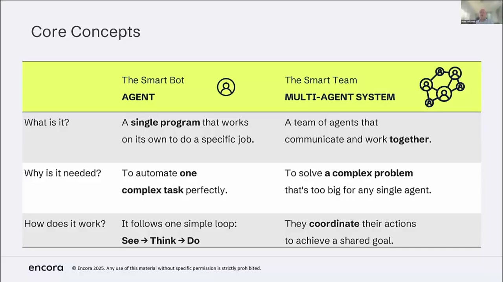
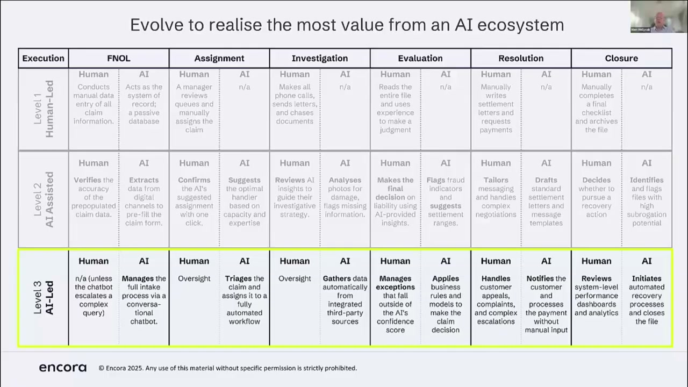
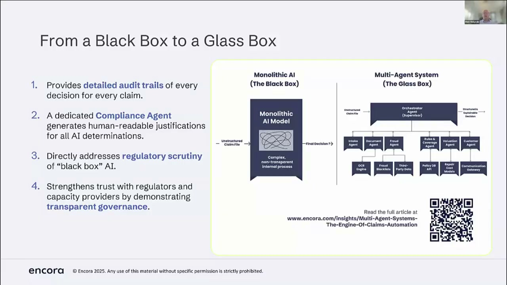
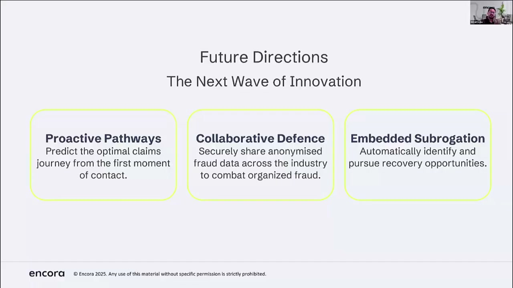

Executive summary
The strongest design move is bounded authority
A claim is a long-running case with changing state, missing evidence, deadlines, financial consequences, and several accountable people. Treating it as one prompt hides those realities. The briefing instead decomposes the journey into intake, coverage, evidence, fraud, and supervisory responsibilities that cooperate over a shared claim record.
That decomposition is valuable only when it narrows authority. An intake agent may collect facts but must not approve payment. An evidence agent may identify inconsistencies but must not declare fraud. A coverage service may apply policy rules but must expose the exact clause and policy version. The supervisor routes work and enforces gates; it should not silently become an all-powerful agent.
- The workflow is the product. Agents are replaceable workers inside an explicit lifecycle, not the architecture itself.
- Automate by risk tier. Low-risk, high-confidence cases can move straight through; uncertainty, material value, fraud signals, or customer vulnerability should lower autonomy.
- Evidence must remain inspectable. Every material conclusion needs source documents, policy clauses, model and prompt versions, tool results, confidence, and the human or rule that authorised the transition.
- Measure customer outcomes, not task completion. Faster extraction is useful, but it does not prove fair settlements, fewer complaints, or better support.
Evidence boundary. This is a source-grounded synthesis of a vendor-presented webinar and its controlled demo, strengthened with UK regulatory guidance and external comparison. It is not proof that the demonstrated system is in production or that the business figures generalise to another insurer.
The operating problem
Claims fail at handoffs, not only at reasoning
The presenters describe a familiar claims operation: data arrives through calls, email, forms, images, invoices, and legacy systems; adjusters copy information between tools; investigations wait on missing documents; and fraud checks happen late or in a separate queue. No single worker sees a complete, current record.
The webinar's audience poll placed integration and fragmented systems among the leading obstacles. That result is directional only: it was a small self-selected webinar poll, not a representative industry study. Still, it highlights the right systems question—whether the platform can maintain one case state across organisational boundaries.
Why a team
Specialisation helps when it creates enforceable contracts

Orchestrator / supervisor
Owns the state machine, dispatches tasks, checks preconditions, pauses for missing evidence, and escalates. It should not invent domain decisions.
FNOL / data collection
Runs the conversation, validates required fields, resolves identity, and writes structured facts with provenance.
Coverage
Retrieves the in-force policy and endorsements, applies deterministic rules, and returns clause-level evidence and unresolved ambiguity.
Evidence analysis
Classifies documents and images, extracts facts, compares submissions, and requests corrections without treating inconsistency as guilt.
Fraud triage
Combines rules, anomaly scores, known patterns, and network signals to prioritise review. It routes suspicion; it does not make a final accusation.
Human claims professional
Handles exceptions, exercises judgement, communicates difficult outcomes, approves high-impact actions, and remains accountable.
Not every box needs an LLM agent. Policy arithmetic, authority limits, deadline checks, duplicate detection, payment controls, and state transitions should usually remain deterministic services. Use language models where the input is ambiguous or unstructured, then constrain their outputs with schemas and policy gates.
Autonomy ladder
Move authority one decision at a time

| Layer | Responsibility | Control | Evidence to advance |
|---|---|---|---|
| Human-led | AI searches, extracts, summarises, and drafts. | A person makes every material decision. | Usability, extraction accuracy, citation coverage, and time saved. |
| AI-assisted | AI recommends a route, next action, or decision. | A person verifies and authorises the result. | Agreement, override quality, subgroup outcomes, and calibrated confidence. |
| AI-led | Approved low-risk decisions execute automatically. | Policy gates, confidence thresholds, value limits, sampling, and instant stop controls. | Shadow and canary results, financial reconciliation, complaints, reversals, and incident rates. |
The essential distinction is not “human in the loop” as a slogan. It is which human, at which transition, with what information, response deadline, and legal authority. A vague review queue simply moves the bottleneck downstream.
Demo reconstruction
The evidence mismatch is the most useful moment
- The conversational intake collects claim details against a structured schema and checks that the policy can be located.
- An email agent requests supporting photographs and receipts, turning a missing-evidence state into an explicit task.
- The claimant submits material for a damaged television and other items.
- The evidence agent spots that the reported Samsung television does not match a receipt for a Sony 75-inch television and that some claimed items lack support.
- The system asks for corrected evidence instead of moving the claim forward on inconsistent data.
This is a good example of an agent creating operational value without making a final claim decision: it closes an information gap early. The safe output is “these facts do not reconcile; request clarification,” not “this claimant committed fraud.” The latter requires a different evidence threshold, procedure, and accountable reviewer.
Demo limitation. The screen share had minor display interruptions and follows a prepared scenario. It demonstrates interaction design and intended orchestration, not production accuracy, resilience, throughput, or regulatory fitness.
Reference architecture
Separate case state, reasoning, tools, and authority
| Layer | Responsibility | Control | Evidence captured |
|---|---|---|---|
| Channels | Web, voice, email, handler UI, partner APIs. | Identity, consent, accessibility, rate limits. | Actor, timestamp, message, attachment hash. |
| Workflow runtime | Durable claim state, task queue, retries, timers, approvals. | State transition rules and idempotency. | Before/after state, event ID, owner, reason. |
| Specialist services | Intake, coverage, evidence, fraud triage, summarisation. | Typed input/output and bounded permissions. | Model, prompt, retrieval set, confidence, citations. |
| Tool gateway | Claims core, policy, CRM, documents, payments, fraud data. | Least privilege, schema validation, policy checks. | Tool arguments, response, latency, error, approval. |
| Human control | Review, correction, approval, exception handling, redress. | Authority matrix and segregation of duties. | Reviewer, decision, rationale, changed fields. |
| Assurance | Evaluation, monitoring, audit, incident response, outcomes. | Release gates, drift alerts, rollback and kill switch. | Test version, cohort metrics, incidents, customer impact. |
MCP can standardise how an agent host discovers and calls tools, resources, and prompts. That is useful at the integration boundary, but it does not provide business authorisation by itself. Every MCP tool still needs an owner, input schema, claims scope, identity propagation, permissions, idempotency contract, audit policy, timeout, and compensation behaviour.
Auditability
Decomposition is not explainability

The presenters call the decomposed system a move from “black box” to “glass box.” Operationally, that can be true: teams can see which service received a task, which document it used, which API it called, and which rule accepted the next state. But a readable agent message is not a guaranteed account of the model's internal reasoning.
A defensible explanation should be reconstructed from reliable artefacts: the observed facts, policy version and clause, deterministic calculations, material model outputs, uncertainty, alternatives, and the accountable decision-maker. The UK ICO guidance similarly asks organisations to choose an appropriate level of interpretability for the domain, document model selection and updates, measure performance, and communicate limitations of supplementary explanation tools.
Control plane
Govern transitions, not personas
Authority matrix
For each transition, record who may recommend, approve, execute, reverse, or override; include value and risk limits.
Evidence contract
Define mandatory fields, accepted evidence types, provenance, freshness, contradiction handling, and what counts as insufficient.
Policy-as-code
Keep non-negotiable coverage, payment, privacy, and escalation rules outside prompts and version them independently.
Evaluation gates
Test each agent, each handoff, and end-to-end customer outcomes before increasing autonomy.
Operational recovery
Design timeouts, retries, duplicate suppression, manual takeover, rollback, replay, and reconciliation before launch.
Customer recourse
Make decisions understandable and contestable, with accessible support and a route to correct bad data or conclusions.
FCA insurance guidance makes the measurement boundary particularly clear: firms should assess, test, understand, and evidence the outcomes customers receive. The regulator warns against relying on process-completion metrics and calls for settlement analysis, decline and withdrawal root causes, complaints, quality assurance, and differentiated monitoring for vulnerable customers. “The agent completed the task” is therefore an operations metric, not proof of a good customer outcome.
Business evidence
Separate targets, observations, and verified outcomes
As an external market comparison, Shift Technology reports that early adopters of its separate claims product achieved 3% lower claims losses, 30% faster handling, 60% automation, and over 99% assessment accuracy. These are vendor-reported figures from a product announcement, not an independent benchmark and not validation of the system in this webinar.
A credible local scorecard should contain at least four layers:
- Model quality: extraction accuracy, coverage-rule agreement, calibration, contradiction detection, and subgroup performance.
- Workflow quality: first-contact completeness, evidence turnaround, exception rate, rework, duplicate actions, and manual takeover.
- Financial control: settlement accuracy, leakage, recovery, fraud referral precision, payment reconciliation, and cost per claim.
- Customer outcome: time to resolution, complaints, reversals, accessibility, vulnerable-customer outcomes, and reasons for declines.
Implementation
A safer path from assistant to selective autonomy
- Map one claim segment. Choose a narrow, high-volume product and document states, owners, evidence, systems, authority, failure modes, and baseline metrics.
- Build the claim event model. Establish canonical IDs, typed events, document provenance, policy versioning, and immutable decision records before adding agents.
- Start read-only. Use AI for intake extraction, document classification, missing-evidence detection, and summaries with citations.
- Shadow recommendations. Compare routes and decisions with actual handlers without affecting customers; analyse disagreements and subgroup outcomes.
- Introduce bounded actions. Allow low-risk communications or task creation behind deterministic rules, approvals, idempotency, and reversible execution.
- Canary straight-through decisions. Restrict by claim type, value, confidence, evidence completeness, and policy clarity; sample outputs and reconcile money daily.
- Expand only on outcome evidence. Promote a decision when customer, operational, and financial measures remain acceptable—not because a demo looked fluent.
For an agentic AI platform
Make the BA compose contracts, not prompts
For a platform with Master Agent, Sub-Agent, Skill, and MCP Tool concepts, this claims example suggests a clearer authoring model. A business analyst should start from a flow state and decision contract, then attach the appropriate worker—not begin with persona prose.
| Layer | Responsibility | Control | Deliverable |
|---|---|---|---|
| Business flow | States, events, transitions, owners, SLAs, exception paths. | Versioned workflow schema. | Flow Markdown plus machine-readable state model. |
| Master agent | Coordinates the case against that state model. | No unrestricted domain or payment authority. | Routing policy, stop conditions, escalation rules. |
| Sub-agent | Performs one bounded role such as evidence reconciliation. | Typed inputs/outputs and narrow data scope. | Capability card with purpose, limits, evals, owner. |
| Cognitive skill | Classify, extract, compare, summarise, recommend. | Evidence and uncertainty contract. | Evaluated reasoning component. |
| Actionable skill | Changes external state through tools. | Preconditions, approvals, idempotency, rollback. | Workflow step bound to approved MCP tools. |
| MCP tool | Exposes a system capability or resource. | Identity, permissions, validation, audit, timeout. | Technical connector, not business policy. |
Persona prompts can still shape communication style, but they should be a thin presentation layer. The durable system is the contract: what this component knows, what it may do, what evidence it must return, what uncertainty blocks action, and who owns failure.
Beyond the demo
Future ideas increase the governance burden

Proactive outreach can reduce friction; cross-carrier signals may improve fraud detection; and embedded subrogation can find recoveries earlier. But these are not merely extra agents. They are new data-sharing and decision regimes. The design review must therefore cover lawful purpose, minimum necessary data, false-positive harm, customer explanation, cross-firm responsibility, retention, and redress before technical implementation.
My take
The architecture is directionally right; the proof is still missing
The briefing correctly treats claims as collaborative work and recognises that integration, evidence, specialist roles, and human oversight matter. The mismatch demo is more persuasive than a generic chatbot because it shows a bounded task that improves case quality before a decision.
Where I disagree is the implication that decomposition itself creates a glass box or that low-code composition removes the need for substantial engineering. Production claims automation still requires data contracts, durable execution, permissions, policy-as-code, evals, observability, incident response, regulatory interpretation, and careful change management. A small data science team may build the model layer; it does not replace those operating capabilities.
The best adoption strategy is therefore modest: automate information work first, then individual low-risk decisions, then only the claim segments whose outcome evidence supports greater autonomy. The goal is not maximum automation. It is faster resolution with equal or better fairness, accuracy, traceability, and recourse.
Video map
Where the key ideas appear
Sources
Primary material and reality checks
- MGAA and Encora — Reimagining Claims Processing with Multi-Agent AI. Primary webinar and auto-generated transcript.
- MGAA — Claims programme archive. Session context and organiser description.
- ICO — Building AI systems that support appropriate explanations. Primary UK data-protection guidance on interpretability, documentation, testing, and limitations.
- FCA — Insurance outcomes monitoring under the Consumer Duty. Primary regulator review of claims, settlements, complaints, vulnerable customers, and outcome evidence.
- Model Context Protocol — Server features overview. Official distinction between prompts, resources, and executable tools.
- Shift Technology — Shift Claims announcement. External market comparison; performance figures are vendor-reported.
Source review completed October 3, 2026. Regulatory links describe UK guidance and expectations, not legal advice. The article distinguishes webinar claims, vendor-reported outcomes, and regulator guidance throughout.